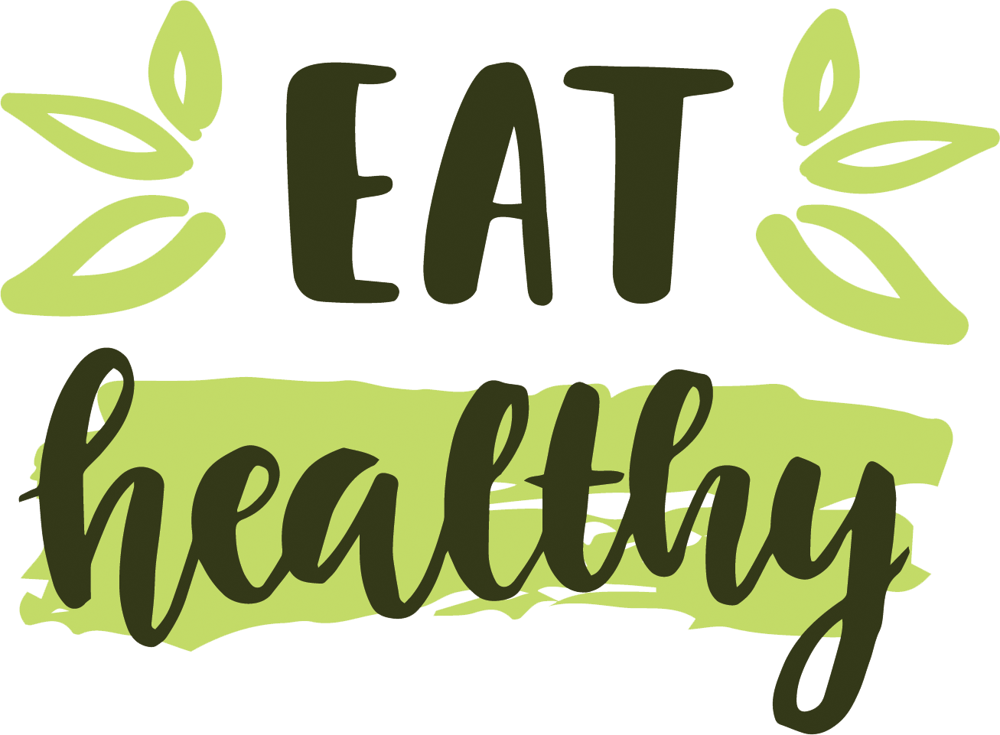

| Your Newsletters |  |
|---|---|
Healthy BlogNo Blog Vida Saudável você ficará informado sobre os hábitos para uma vida saudável: - Motivação, saúde e felicidade - Alimentação saudável e natural e muito mais. Você pode ler mais sobre vida saúdavel acessando o nosso blog! Acessar o blog |
|
| Últimas Postagens | |
|
3 dicas importantes para hidratar a pele no verãoA hidratação é fundamental para manter a pele saudável e bonita durante o verão. O calor e a exposição solar podem deixar a pele seca e desidratada, mas...
Como cuidar da pele no verãoO verão é a estação do ano em que a pele está mais exposta aos raios UV, o que aumenta o risco de danos à saúde da pele, incluindo o câncer de pele. Portanto, é importante tomar medidas para proteger a pele dos danos causados pelo sol. A primeira dica é usar protetor solar com…
Conheça os principais exames de um check-up pediátricoA infância é um período de rápido crescimento e mudanças. Para garantir que as crianças se tornem adultos saudáveis, a Associação Brasileira de Pediatria (ABP)... |
|
|
Healthy Blog - O blog da vida saúdavel |
|